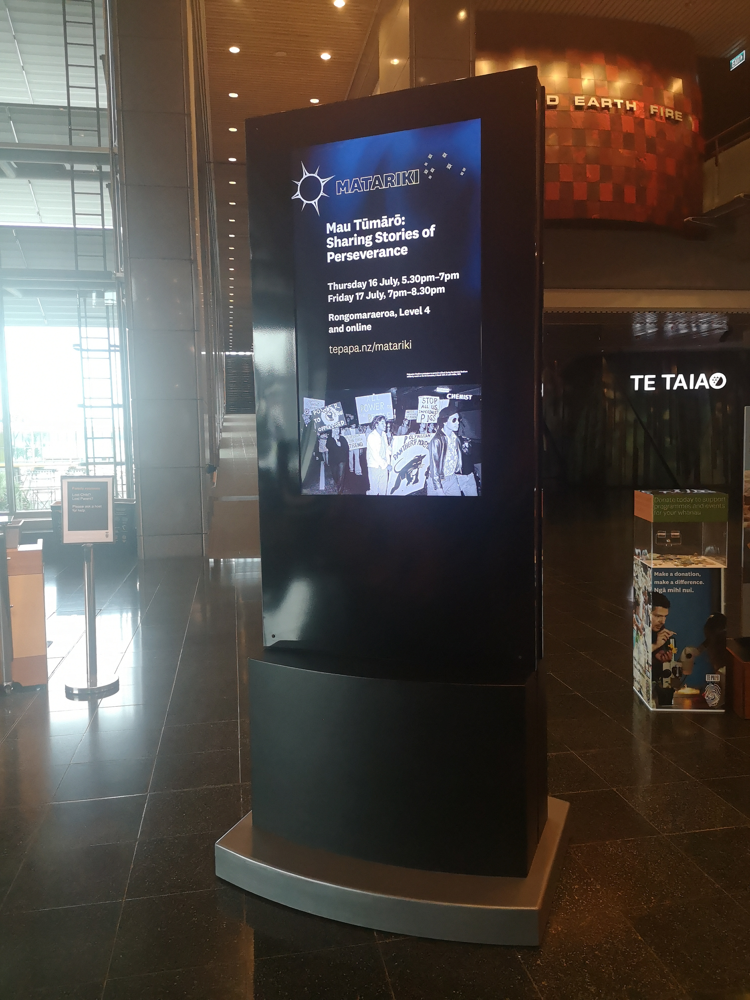

Screen in Museum
This screen is placed in Tepapa Museum. The content displayed can be changed at any time over the Internet. For a museum, a display clearly shows the museum's priorities and hot items.

Screen in square
This screen is on the square by the sea. Information about health, safety and news is displayed on screens via the Internet.